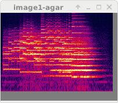
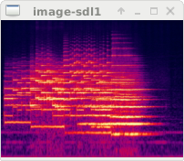
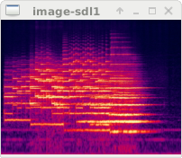

Martin Guy
<martinwguy@gmail.com>
|  |
|
|
Bugs/Features:
Despite big holes in the documentation and few examples, the first example program was working in a couple of hours. The second example, with a File-Open/Quit menu bar above the image, took days to get right. Fast and robust once it's right.
The zoomed image is of superb quality (it looks like its algorithm is the same as GTK's), zooming smoothly as the window is resized.
It requires the least lines of code, of the ones that work.
You have to rescale the image explicitly at every window resize in a callback.
The resized image quality is excellent and the speed acceptable if laggy.
Unfortunately, the deprecated set-window-sizing-strategy call that we used in GTK2 to make the window shrink has been removed. A bizarre trick that works with GTK3 is to put the image inside a rare kind of invisible container on which you set some properties. Gak!
GTK2 and 3 have a
14-year-old bug in common: if you scale an image down by a large factor,
the "filter tables" bloat out to 900MB of active RAM and it has a 100% CPU
epileptic fit lasting tens of seconds. The code here has workarounds for the
worst cases and I've submitted a better workaround to the maintainers of
the affected library, gdk-pixbuf. However, instead of fixing it or helping,
they seem more intent on raising one silly objection after the other.
That would explain why GTK is still full of bugs!
Bugs:
 
SDL isn't a GUI toolkit; it's a drawing library. For the simple test program
it has the smallest code and the smallest executable.
If you want anything more, you have to draw everything yourself
and pilot it by keystrokes. SDL1 doesn't have an image scaler of its own,
so we use the swscale library, which results in laggy operation.

SDL isn't a GUI toolkit; it's a drawing library. For the simple test program
it has the smallest code and the smallest executable.
If you want anything more, you have to draw everything yourself
and pilot it by keystrokes. SDL1 doesn't have an image scaler of its own,
so we use the swscale library, which results in laggy operation.
Although this is the oldest software of them all, it is well maintained and
successfully adapted to modern displays. If you want buttons, menus etc,
you have to draw them yourself.
Like SDL1, you have to draw user-interface items yourself.
| Toolkit | Window size for 200x150 | Scaler | Motion |
|---|---|---|---|
| AGAR | 203x177 | Nearest | Buggy |
| ELM | 202x176 | Bilinear | Jerky |
| EVAS | 202x176 | Bilinear | Jerky |
| GTK2 | 202x176 | Bilinear | Sometimes pauses for minutes |
| GTK3 | 202x176 | Bilinear | Sometimes pauses for minutes |
| IUP | 202x176 | Nearest | jerky, sometimes pauses for seconds |
| SDL1 | 202x176 | swscale | Fast but flickers to black between frames |
| SDL2 | 202x176 | Nearest | The fastest/smoothest of all |